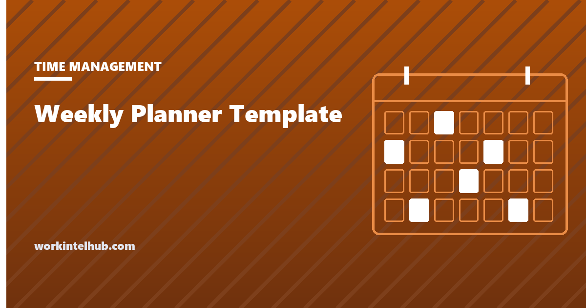

Weekly Planner Template

A weekly planner is a grid of the week's hours with the things that are already decided written in, so that the hours that are still free are visible before they disappear. That is the whole idea, and it is more useful than it sounds. Most weeks are lost not to a bad decision but to the absence of one: the calendar fills with what other people put there, the important work is done "when there is time", and there never is. Writing the week down turns an intention into a plan, which the research on goal pursuit says roughly doubles the odds of it happening.
The generator below builds a planner from your hours, your fixed commitments and the three outcomes you want from the week, with a protected focus block placed for you. The rest of the page covers the fifteen-minute planning method, the evidence, and the mistakes that turn planners into decoration.
Weekly planner generator
Nothing typed here leaves your browser. The planner places your fixed commitments, marks the protected focus block, and leaves the rest as open slots with the week's three outcomes at the top where you will see them each morning.
The fifteen-minute weekly plan
- Pick three outcomes. Not tasks: outcomes, the things that will be true on Friday that are not true now. Three is the number that fits in a head and survives a bad Tuesday. Write them at the top where they will be read every morning.
- Put in what is fixed. Meetings, deadlines, the school run, the commute. These are the constraints, and the planner is for seeing what is left.
- Protect one block a day. Two hours, same time each day, for the work the outcomes need. The generator marks it. Defending it is the week's real discipline; the time blocking guide covers how.
- Assign each outcome a day. Not a slot, a day, in the focus block. An outcome with no day is a wish.
- Leave a third of the week open. A plan that fills every hour breaks at the first interruption, and the interruption data says the first one arrives within minutes.
- Each evening, write tomorrow's first task. One line. It removes the decision from the morning, which is when decisions are worst. The Ivy Lee method is this step formalised.
- Friday, ten minutes. Which outcomes moved, what stole the time, what changes next week. Without the review the plan never improves.
The plan is written on Sunday evening or first thing Monday. Later than that and the week has already started making its own decisions.
Why writing the plan works
The mechanism has a name in the psychology literature: implementation intentions, plans of the form "when situation X arises, I will do Y". Gollwitzer and Sheeran (2006) pooled 94 studies with more than 8,000 participants and found that forming such plans raised the rate of goal attainment with an effect size of d = 0.65, medium to large by convention and unusually stable across domains. The reason, in their account, is that a specified time and place hands control of the behaviour to the situation: when Tuesday at 9 arrives, the decision has already been made, and the cue does the work that willpower would otherwise have to.
The planner is a set of implementation intentions on a grid. "Draft the onboarding checklist" is a goal; "Tuesday, 8 to 10, draft the onboarding checklist" is an implementation intention, and the difference in follow-through is what the meta-analysis measured. That is also why step four above insists on a day: the plan without a cue is a goal again.
The second body of evidence is about what the plan is protecting against. Gloria Mark of the University of California, Irvine, has tracked screen attention in office workers since 2004 and reports that the average span on one screen fell from about two and a half minutes then to 47 seconds in the most recent studies, with a median of 40. The Microsoft Work Trend Index found interruptions every two minutes across the working day. A week that is not planned is a week allocated by those interruptions.
Paper, calendar or app
| Format | Good for | Weak at |
|---|---|---|
| Printed grid (this generator) | Seeing the whole week at once; the physical act of writing; being on the desk, not behind a tab | Changes; it does not sync with anything |
| Calendar blocks | Meetings already live there; blocks are visible to colleagues and defend themselves | Outcomes have nowhere to live; every block looks the same as a meeting |
| Task app with weekly view | Carrying tasks over; recurring items; capture on the move | Lists grow; the three outcomes drown in the forty tasks |
| Notebook, one page a week | The review; notes beside the plan; no notifications | Time grid is approximate; fixed commitments still live in the calendar |
The common working arrangement is two of these: the calendar for fixed commitments and focus blocks, and one page (printed or in a notebook) for the three outcomes and the review. The time management tools page sorts the apps by the problem they solve, and the Eisenhower matrix is the sorting step that decides which three outcomes make the top of the page.
Why planners get abandoned
- Filling every hour. The plan fails at the first interruption and is blamed for it. Leave a third open.
- Tasks instead of outcomes. Forty items at the top of the page is a to-do list with a grid attached. Three outcomes; the tasks live elsewhere.
- Planning on Monday afternoon. By then the week is under way and the plan describes what already happened. Sunday evening or Monday before email.
- No review. Without Friday's ten minutes the same mistakes repeat and the plan feels pointless within a month.
- Treating the focus block as optional. It moves once for a genuine emergency and then every time. The block is a meeting with the work; decline others.
- Copying an example week. A planner built around someone else's job will not fit yours. The generator's defaults are only defaults.
- Perfectionism about the format. The colour-coded, sticker-decorated planner is a hobby. A pencil grid with three lines at the top does the work.
For the daily unit of the same idea, the time blocking planner lays out a single day; for the week's worth of focused work, the monk mode guide covers the more extreme version.
Key takeaways
- A weekly planner puts fixed commitments on a grid so that the free hours are visible before they disappear.
- Three outcomes for the week, each assigned a day inside a protected two-hour focus block, with a third of the week left open.
- Written plans with a time and place are implementation intentions; a meta-analysis of 94 studies found they raise goal attainment with an effect size of 0.65.
- Screen attention now averages 47 seconds and interruptions arrive every two minutes; an unplanned week is allocated by them.
- Plan on Sunday evening or Monday before email, write tomorrow's first task each evening, and review for ten minutes on Friday.
- Planners are abandoned when every hour is filled, tasks replace outcomes, or the review is skipped.
Frequently asked questions
What should a weekly planner include?
The week's three outcomes at the top, a time grid for each working day with fixed commitments written in, a protected focus block marked at the same time each day, a line each evening for the next day's first task, and space for a Friday review. Anything more is optional.
When is the best time to plan the week?
Sunday evening or first thing Monday before opening email. Fifteen minutes is enough. Planning later on Monday means the week has already started allocating itself.
How many goals should you set for a week?
Three outcomes. Three fits in memory, survives a disrupted day, and forces a choice about what matters. Tasks that serve those outcomes can be numerous, but they live on a separate list, not at the top of the planner.
Does writing down a plan actually help?
Yes, when the plan says when and where. Gollwitzer and Sheeran's 2006 meta-analysis of 94 studies found that implementation intentions, plans of the form 'when X, I will do Y', improved goal attainment with a medium-to-large effect (d = 0.65). A weekly planner is a set of those plans on a grid.
Is a paper planner better than a digital one?
They do different jobs. Paper shows the whole week at once and sits on the desk rather than behind a tab; a calendar holds the meetings and makes focus blocks visible to colleagues. Most people who keep the habit use both: the calendar for commitments and blocks, one page for outcomes and the review.
How much of the week should be left unplanned?
About a third. Interruptions arrive every two minutes on average in recent workplace studies, and a plan with no slack breaks at the first one. Open time absorbs the unplanned work without displacing the focus blocks.